A documented selection of scientific awards, professional honours and institutional achievements recognising Prof. Dr. Khaled Fouad Khaled’s contributions to electrochemistry, corrosion science, computational chemistry, university education, industry and community service.تعرض هذه الصفحة نماذج موثقة من الجوائز العلمية والتكريمات والإنجازات المؤسسية التي حصل عليها الأستاذ الدكتور خالد فؤاد خالد خلال مسيرته الأكاديمية والبحثية، تقديرًا لإسهاماته في الكيمياء الكهربية وعلوم التآكل والكيمياء الحاسوبية والتعليم الجامعي وخدمة المجتمع والصناعة.
Titles and dates are based on the certificates, letters and records contained in the supplied academic portfolio.تستند العناوين والتواريخ إلى الشهادات والخطابات والسجلات الواردة في ملف النشاط العلمي المرفق.
40+DOCUMENTED RECORDS
Featured Recognitionأبرز الجوائز والتكريمات
Selected milestones of scientific impactمحطات مختارة من الأثر العلمي
Open a milestone to move directly to its documented record.اختر إحدى المحطات للانتقال مباشرة إلى سجلها الموثق.
Browse awards and achievementsتصفح الجوائز والإنجازات
International Recognitionالتقدير الدولي
International Recognitionالتقدير الدولي
Recognition, research funding and rankings documented beyond the national and regional context.تكريمات وتمويل بحثي وتصنيفات موثقة خارج النطاقين الوطني والإقليمي.
1
International Recognitionالتقدير الدولي
Robert A. Welch Foundation Research Fundingتمويل بحثي من مؤسسة Robert A. Welch
Robert A. Welch Foundation · Houston, Texasمؤسسة Robert A. Welch · هيوستن، تكساس
Documented support for chemistry research during the 2000–2001 period. It is presented as research funding rather than relabelled as a conventional prize.دعم موثق لبحوث الكيمياء خلال الفترة 2000–2001، ويُعرض بوصفه تمويلًا بحثيًا دون إعادة تصنيفه باعتباره جائزة تقليدية.
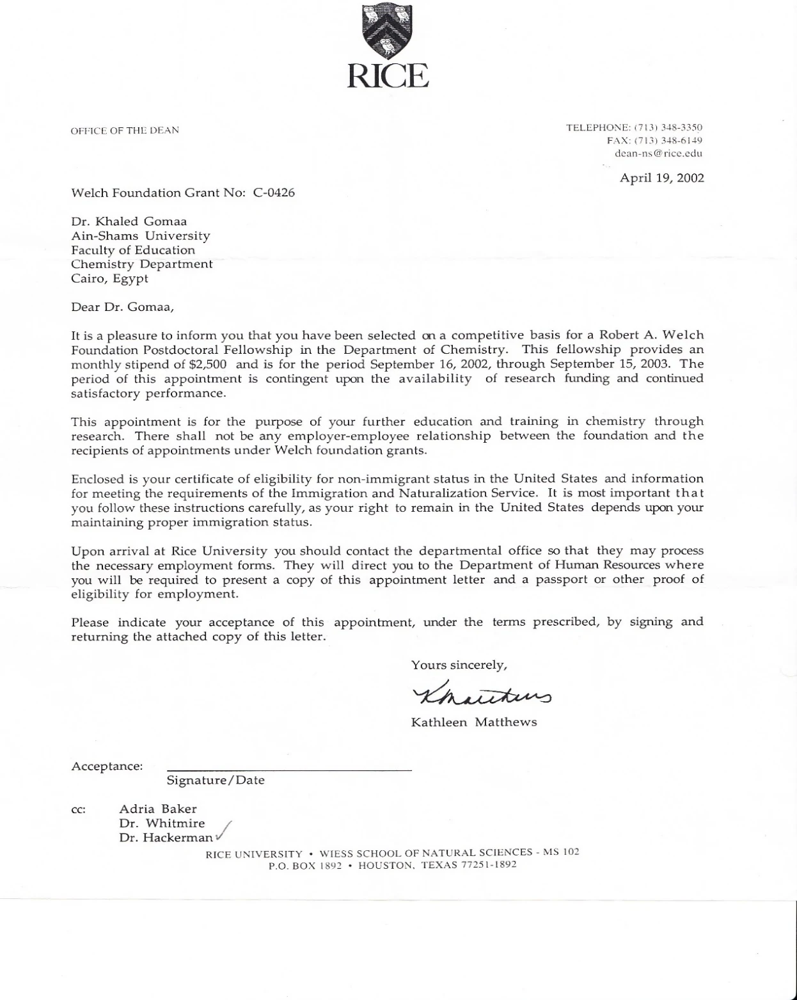
2
International Recognitionالتقدير الدولي
Robert A. Welch Foundation Research Fundingتمويل بحثي من مؤسسة Robert A. Welch
Robert A. Welch Foundation · Houston, Texasمؤسسة Robert A. Welch · هيوستن، تكساس
A second documented period of chemistry research support spanning 2002–2004, represented by two portfolio documents.فترة ثانية موثقة لدعم بحوث الكيمياء امتدت من 2002 إلى 2004، وتدعمها وثيقتان ضمن ملف النشاط العلمي.
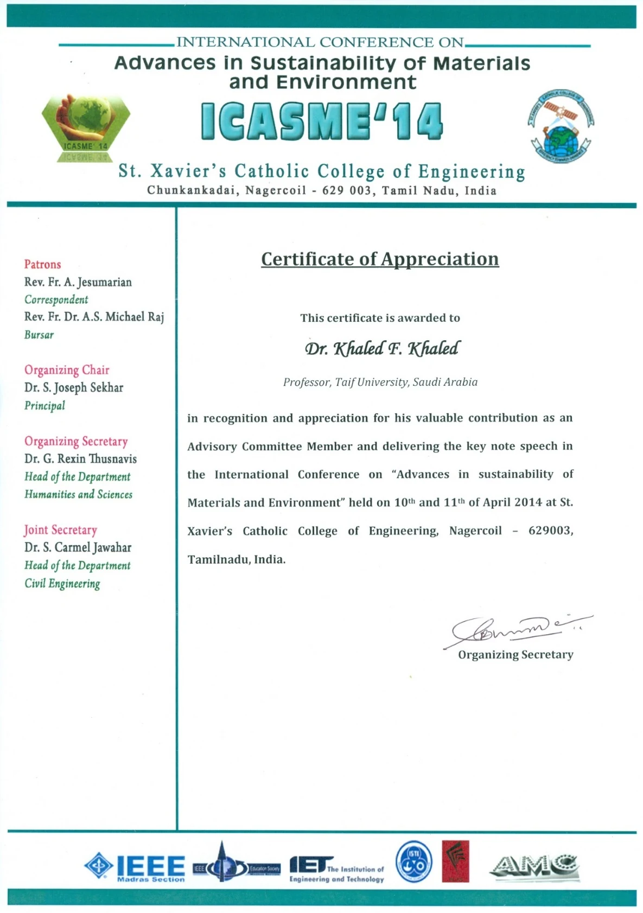
1
International Recognitionالتقدير الدولي
Engineering College Honour in Tamil Naduتكريم من كلية هندسة في تاميل نادو
Academic institution · Tamil Nadu, Indiaمؤسسة أكاديمية · تاميل نادو، الهند
International academic honour documented by a certificate from an engineering college in Tamil Nadu, India.تكريم أكاديمي دولي موثق بشهادة من إحدى كليات الهندسة في ولاية تاميل نادو بالهند.
1
International Recognitionالتقدير الدولي
Highly Cited Research Recognitionتكريم بحث مرتفع الاستشهاد
Electrochimica Acta · Elsevierمجلة Electrochimica Acta · دار Elsevier
Recognition associated with one of the most highly cited papers in Electrochimica Acta during 2008–2009, as documented in the portfolio.تكريم مرتبط بأحد الأبحاث الأعلى استشهادًا في مجلة Electrochimica Acta خلال عامي 2008–2009، وفق الوثيقة المدرجة في الملف.
2
International Recognitionالتقدير الدولي
Elsevier–Stanford Top 2% Scientists Recognitionالتكريم ضمن قائمة أفضل 2% من علماء العالم
Elsevier–Stanford classification · Portfolio documentationتصنيف Elsevier–Stanford · وفق وثائق الملف
The portfolio documents inclusion among the world’s top 2% of scientists and first-place recognition at Ain Shams University across the listed years 2019–2023.توثق الحافظة إدراج الاسم ضمن قائمة أفضل 2% من علماء العالم، والتكريم بالمركز الأول على مستوى جامعة عين شمس خلال السنوات المذكورة 2019–2023.
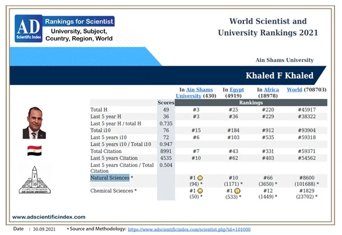
1
International Recognitionالتقدير الدولي
AD Scientific Index Recognition in Chemical Sciencesتكريم AD Scientific Index في العلوم الكيميائية
AD Scientific Indexتصنيف AD Scientific Index
An undated certificate in the portfolio records first-place ranking in Egypt in the field of chemical sciences. The page preserves the document’s wording without treating it as a current ranking.تسجل شهادة غير مؤرخة بالملف الحصول على المركز الأول على مستوى مصر في مجال العلوم الكيميائية، مع الحفاظ على صياغة الوثيقة دون عرضها بوصفها ترتيبًا حاليًا.
Regional Awardsالجوائز الإقليمية
Regional Awardsالجوائز الإقليمية
Awards and recognition from scientific societies and universities in the Arab region.جوائز وتكريمات صادرة عن جمعيات علمية وجامعات في الإقليم العربي.
1
Regional Awardsالجوائز الإقليمية
Saudi Chemical Society Youth Awardجائزة الجمعية الكيميائية السعودية – فئة الشباب
Saudi Chemical Societyالجمعية الكيميائية السعودية
Regional scientific award in the youth category, documented for 2012.جائزة علمية إقليمية ضمن فئة الشباب، موثقة لعام 2012.
University recognition for distinguished research performance during the documented Hijri academic period.تكريم جامعي للأداء البحثي المتميز خلال الفترة الهجرية الأكاديمية الموثقة.
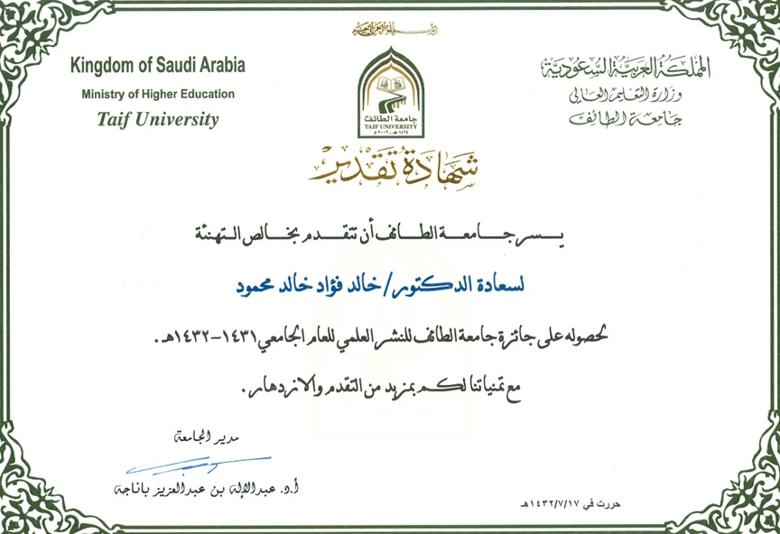
1
Regional Awardsالجوائز الإقليمية
Distinguished Scientific Publication Awardجائزة النشر العلمي المتميز
Taif Universityجامعة الطائف
Recognition for distinguished scientific publication during 1431–1432 AH.تكريم للنشر العلمي المتميز خلال عام 1431–1432هـ.
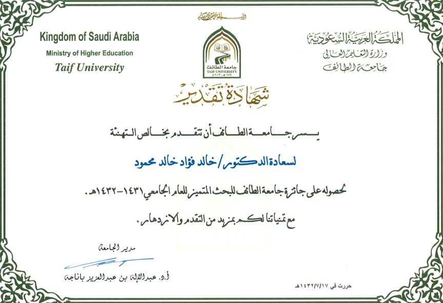
1
Regional Awardsالجوائز الإقليمية
Distinguished Research Awardجائزة البحث المتميز
Taif Universityجامعة الطائف
Documented award for a distinguished research contribution during 1431–1432 AH.جائزة موثقة عن إسهام بحثي متميز خلال عام 1431–1432هـ.
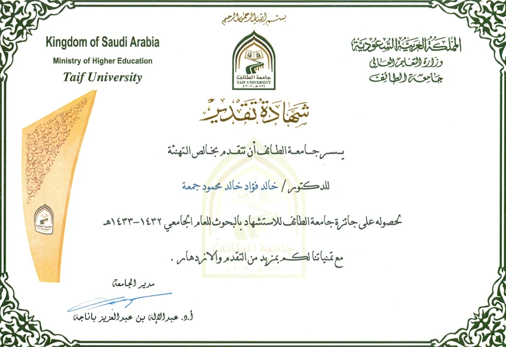
1
Regional Awardsالجوائز الإقليمية
Research Citation Awardجائزة الاستشهاد بالبحوث
Taif Universityجامعة الطائف
Recognition by Taif University for research citation impact during 1432–1433 AH.تكريم من جامعة الطائف للأثر الاستشهادي للبحوث خلال عام 1432–1433هـ.
Distinguished researcher recognition documented by two related portfolio items for 1432–1433 AH.تكريم الباحث المتميز موثق بوثيقتين مترابطتين عن عام 1432–1433هـ.
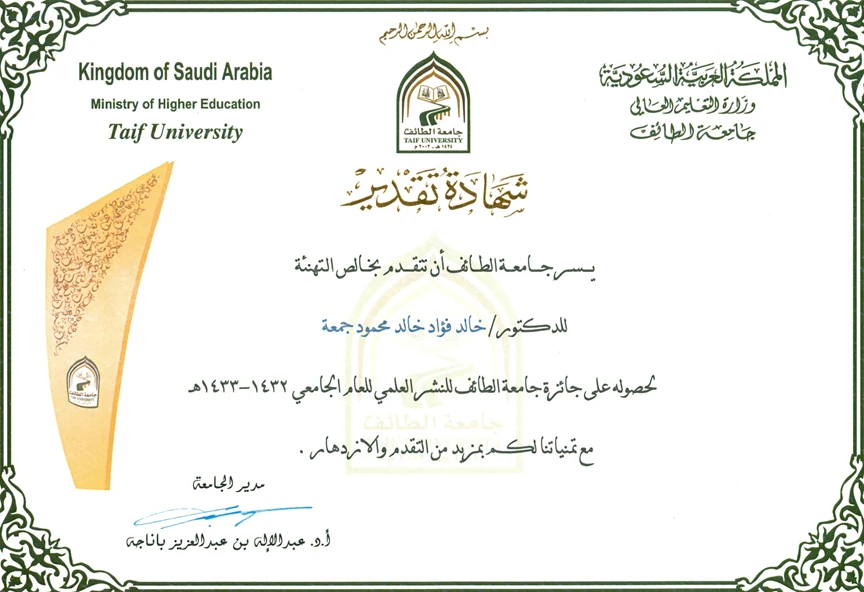
1
Regional Awardsالجوائز الإقليمية
Distinguished Scientific Publication Awardجائزة النشر العلمي المتميز
Taif Universityجامعة الطائف
Award for distinguished scientific publishing during 1432–1433 AH.جائزة للنشر العلمي المتميز خلال عام 1432–1433هـ.
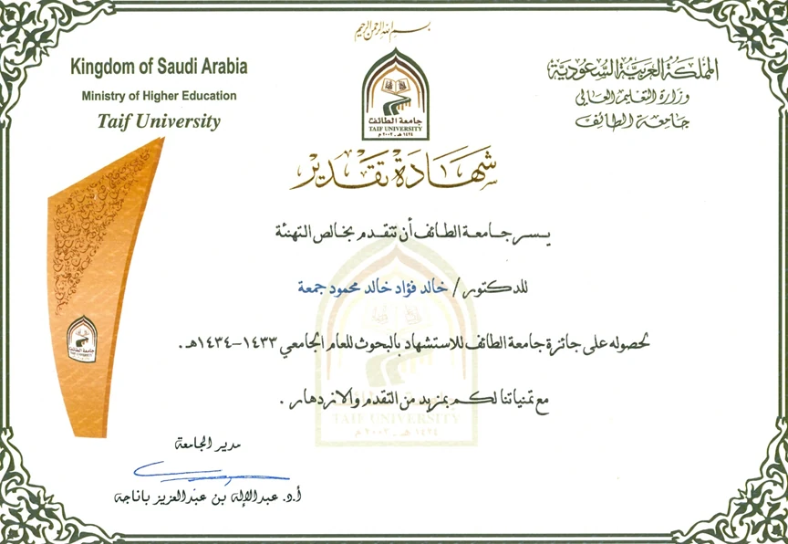
1
Regional Awardsالجوائز الإقليمية
Research Citation Awardجائزة الاستشهاد بالبحوث
Taif Universityجامعة الطائف
Research citation recognition for the 1433–1434 AH period.تكريم للاستشهاد بالبحوث عن الفترة 1433–1434هـ.
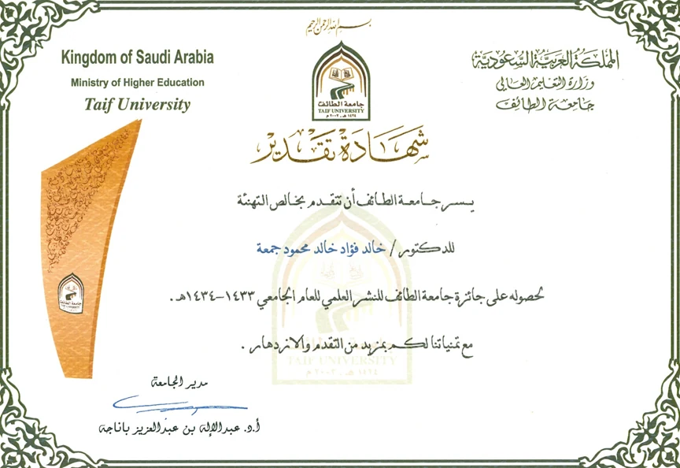
1
Regional Awardsالجوائز الإقليمية
Distinguished Scientific Publication Awardجائزة النشر العلمي المتميز
Taif Universityجامعة الطائف
Distinguished scientific publication award for 1433–1434 AH.جائزة النشر العلمي المتميز عن عام 1433–1434هـ.
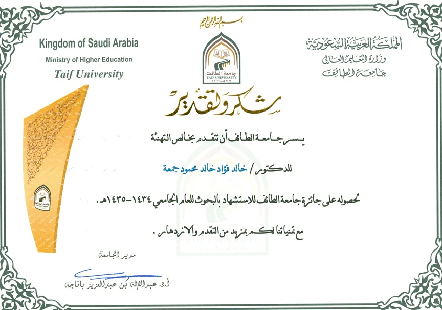
1
Regional Awardsالجوائز الإقليمية
Research Citation Awardجائزة الاستشهاد بالبحوث
Taif Universityجامعة الطائف
Research citation recognition for the 1434–1435 AH period.تكريم للاستشهاد بالبحوث عن الفترة 1434–1435هـ.
National & University Awardsالجوائز الوطنية والجامعية
National & University Awardsالجوائز الوطنية والجامعية
National and university-level awards documented in Egypt.جوائز وطنية وجامعية موثقة داخل مصر.
2
National & University Awardsالجوائز الوطنية والجامعية
A university appreciation award documented for 2021, represented by two related official documents in the academic portfolio.جائزة جامعية تقديرية موثقة لعام 2021، وتدعمها وثيقتان رسميتان مترابطتان في ملف النشاط العلمي.
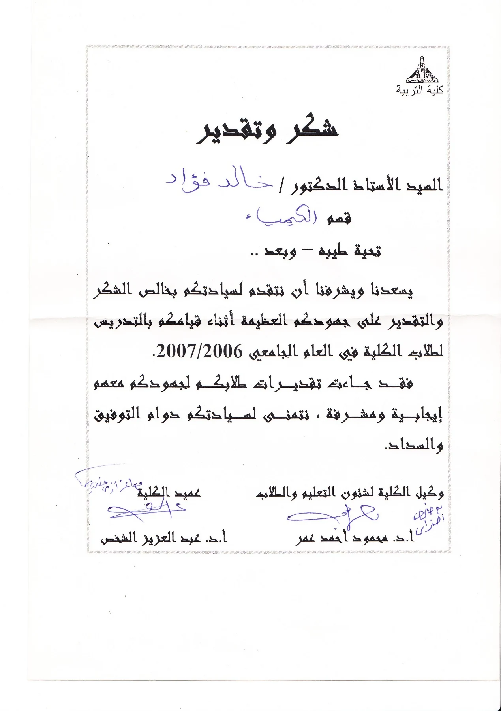
1
National & University Awardsالجوائز الوطنية والجامعية
Best Lecturer in the Faculty Awardجائزة أفضل محاضر بالكلية
Faculty-level recognitionتكريم على مستوى الكلية
Faculty recognition for teaching performance during the 2006/2007 academic year.تكريم على مستوى الكلية للأداء التدريسي خلال العام الجامعي 2006/2007.
1
National & University Awardsالجوائز الوطنية والجامعية
State Encouragement Award in Chemical Sciencesجائزة الدولة التشجيعية في العلوم الكيميائية
Arab Republic of Egypt · Ministry of Higher Education and Scientific Researchجمهورية مصر العربية · وزارة التعليم العالي والبحث العلمي
National award in chemical sciences documented for 2009, recognising the scientific contribution described in the official letter.جائزة وطنية في العلوم الكيميائية موثقة لعام 2009، تقديرًا للإسهام العلمي المبين في الخطاب الرسمي.
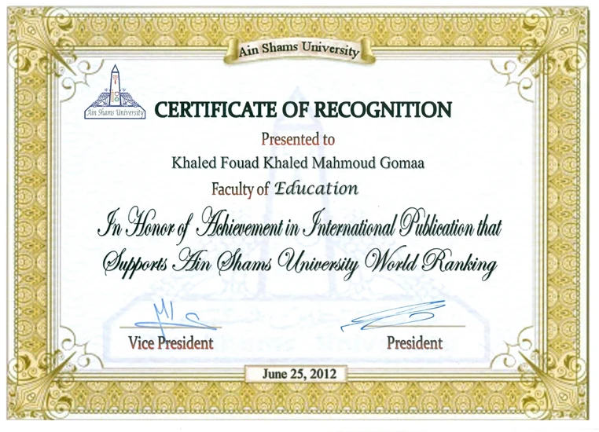
1
National & University Awardsالجوائز الوطنية والجامعية
Distinguished Scientific Publication Awardجائزة النشر العلمي المتميز
Faculty recognition for establishing the electrochemistry laboratory, with the portfolio statement linking the laboratory to the highest H-index at university level.تكريم من الكلية لتأسيس معمل الكيمياء الكهربية، مع ربط بيان الملف للمعمل بأعلى H-Index على مستوى الجامعة.
Two certificates document recognition for establishing the faculty’s molecular modelling laboratory.توثق شهادتان التكريم على تأسيس معمل النمذجة الجزيئية بالكلية.
Establishment of a House of Expertise at Taif Universityتأسيس بيت خبرة بجامعة الطائف
Taif Universityجامعة الطائف
Certificate documenting the establishment of a House of Expertise to provide scientific consultation to organisations outside the university.شهادة توثق تأسيس بيت خبرة لتقديم الاستشارات العلمية إلى الجهات خارج الجامعة.
SABIC Potable-Water Network Corrosion Consultancyاستشارة تآكل شبكة المياه لشركة سابك
SABIC Research & Technology · Riyadhمركز البحوث والتكنولوجيا بشركة سابك · الرياض
Leadership of a consultancy study diagnosing corrosion in carbon-steel pipes and tanks, followed by a technical report and recommendations for corrective action.قيادة دراسة استشارية لتشخيص تآكل مواسير وخزانات الصلب الكربوني، وإعداد تقرير فني وتوصيات لمعالجة المشكلة.
Scientific Consultation for Princess Nourah Universityاستشارة علمية لجامعة الأميرة نورة
College of Science · Princess Nourah bint Abdulrahman Universityكلية العلوم · جامعة الأميرة نورة بنت عبد الرحمن
Official correspondence documents a request for scientific consultation from the College of Science.توثق المكاتبات الرسمية طلب استشارة علمية من كلية العلوم بالجامعة.
Documented supervision and capacity-building for master’s and doctoral researchers across electrochemistry, corrosion and interdisciplinary topics.إشراف موثق وبناء للقدرات البحثية لطلاب الماجستير والدكتوراه في الكيمياء الكهربية والتآكل والموضوعات البينية.
A multinational research collaboration resulted in a review article published in Coordination Chemistry Reviews, documented in the portfolio as a major research contribution.أسفر تعاون بحثي متعدد الجنسيات عن مقال مراجعة منشور في مجلة Coordination Chemistry Reviews، ووُثق في الملف بوصفه إسهامًا بحثيًا بارزًا.
Official faculty letter recognising achievements in scientific research, international publishing and community participation.خطاب رسمي من الكلية يشيد بالإنجازات في البحث العلمي والنشر الدولي والمشاركة المجتمعية.
Contribution to Founding and Editing Peer-Reviewed Journalsالإسهام في تأسيس وتحرير دوريات علمية محكمة
Journal of Chemical Acta · Advances in Materials and CorrosionJournal of Chemical Acta · Advances in Materials and Corrosion
Portfolio evidence records the founding of two peer-reviewed journals and editorial responsibilities in specialist chemistry and corrosion publications.تسجل وثائق الملف تأسيس مجلتين علميتين محكمتين وتولي مسؤوليات تحريرية في دوريات متخصصة بالكيمياء والتآكل.
External Honoursتكريم الجهات الخارجية
External Honoursتكريم الجهات الخارجية
Selected honours for workshops, participation and institutional contribution.نماذج من التكريم للمشاركة العلمية وورش العمل والإسهام المؤسسي.
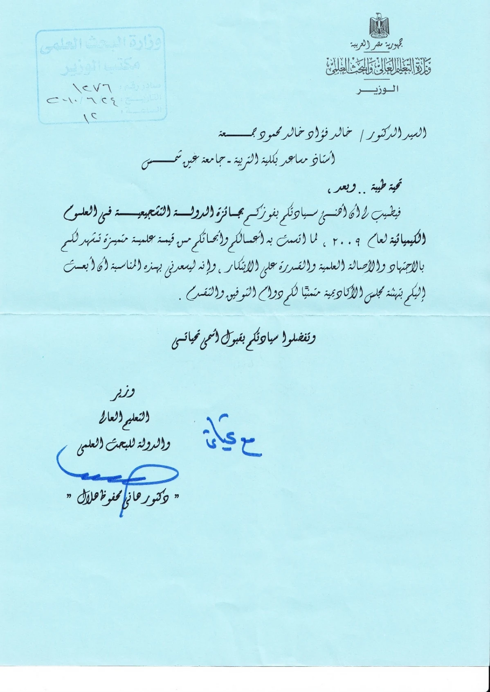
1
External Honoursتكريم الجهات الخارجية
Ministry of Higher Education Honourتكريم وزارة التعليم العالي
Ministry of Higher Educationوزارة التعليم العالي
Official honour connected with receiving the State Encouragement Award.تكريم رسمي مرتبط بالحصول على جائزة الدولة التشجيعية.
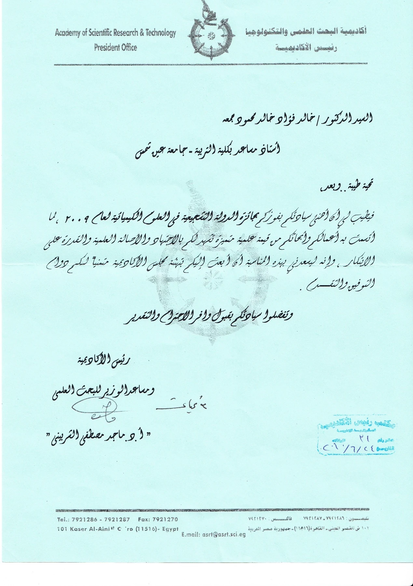
1
External Honoursتكريم الجهات الخارجية
Academy of Scientific Research and Technology Honourتكريم أكاديمية البحث العلمي والتكنولوجيا
Academy of Scientific Research and Technologyأكاديمية البحث العلمي والتكنولوجيا
Recognition associated with the State Encouragement Award in chemical sciences.تكريم مرتبط بجائزة الدولة التشجيعية في العلوم الكيميائية.
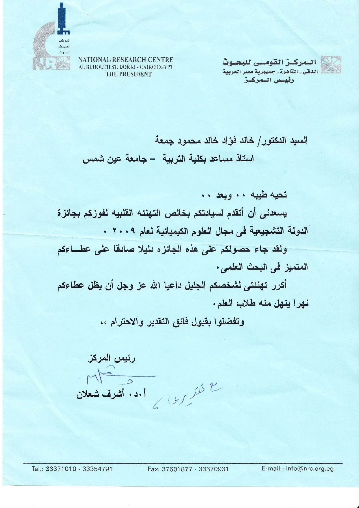
1
External Honoursتكريم الجهات الخارجية
National Research Centre Honourتكريم المركز القومي للبحوث
National Research Centreالمركز القومي للبحوث
Institutional honour connected with the State Encouragement Award.تكريم مؤسسي مرتبط بجائزة الدولة التشجيعية.
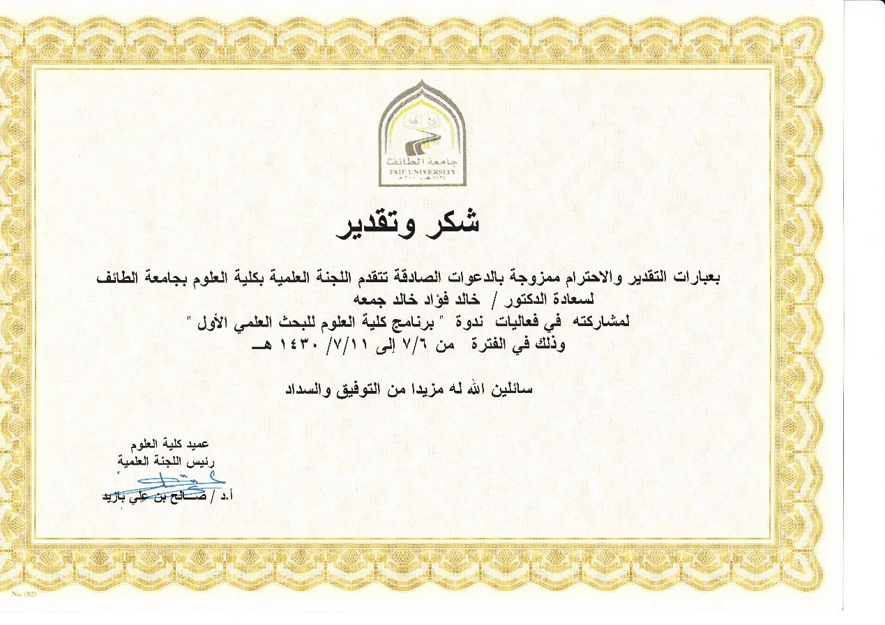
1
External Honoursتكريم الجهات الخارجية
Participation in the First College of Science Research Programmeالمشاركة في برنامج كلية العلوم الأول للبحث العلمي
College of Science · Taif Universityكلية العلوم · جامعة الطائف
Certificate of recognition for participation in the College of Science’s first scientific research programme.شهادة تكريم للمشاركة في البرنامج الأول لكلية العلوم للبحث العلمي.
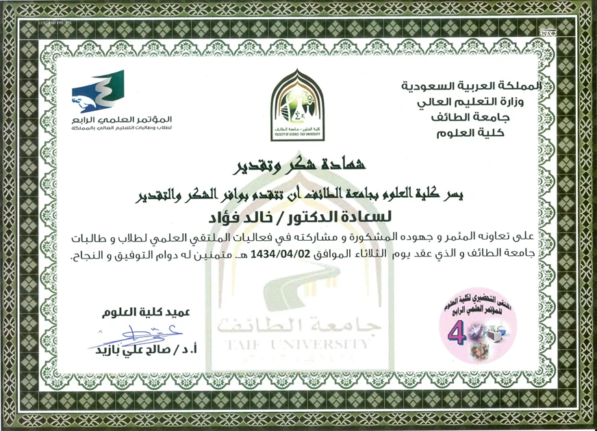
1
External Honoursتكريم الجهات الخارجية
Participation in the Taif University Student Scientific Forumالمشاركة في الملتقى العلمي لطلاب وطالبات جامعة الطائف
College of Science · Taif Universityكلية العلوم · جامعة الطائف
Recognition for participation in the university’s student scientific forum.تكريم للمشاركة في الملتقى العلمي لطلاب وطالبات الجامعة.
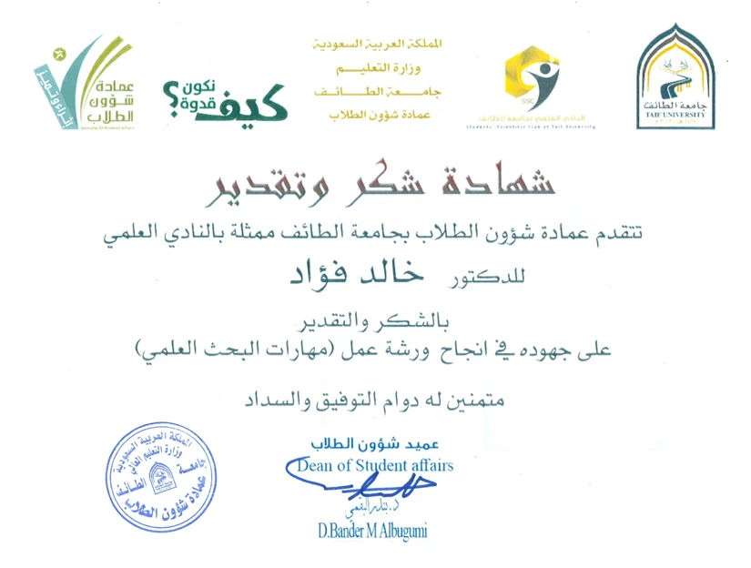
1
External Honoursتكريم الجهات الخارجية
Scientific Research Skills Workshop Honourتكريم ورشة مهارات البحث العلمي
Deanship of Student Affairs · Taif Universityعمادة شؤون الطلاب · جامعة الطائف
Recognition for contributing to a workshop on scientific research skills.تكريم للإسهام في ورشة عمل حول مهارات البحث العلمي.
Deanship of E-Learning · Taif Universityعمادة التعليم الإلكتروني · جامعة الطائف
Two certificates recognise effective electronic delivery of courses in the first and second academic semesters.شهادتان تقديريتان لتفعيل المقررات الدراسية إلكترونيًا خلال الفصلين الدراسيين الأول والثاني.
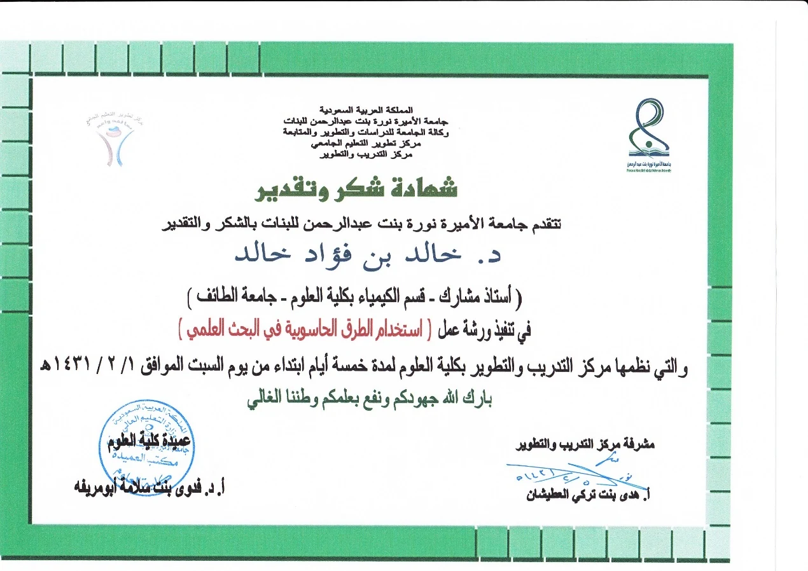
1
External Honoursتكريم الجهات الخارجية
Research Methods Workshop Honourتكريم ورشة استخدام طرق البحث العلمي
Princess Nourah bint Abdulrahman Universityجامعة الأميرة نورة بنت عبد الرحمن
Recognition for delivering a workshop on the use of research methods.تكريم لتنفيذ ورشة عمل حول استخدام طرق البحث العلمي.
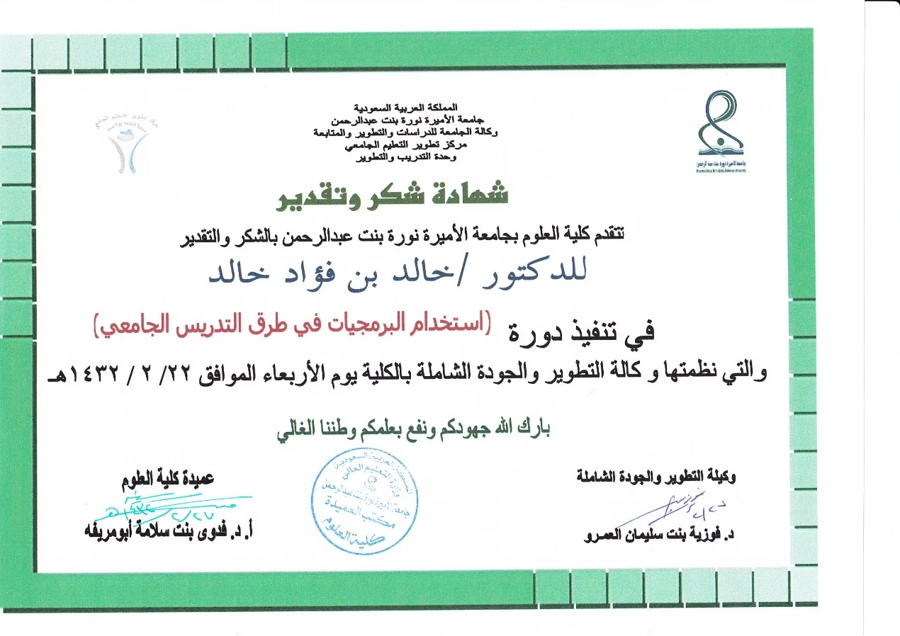
1
External Honoursتكريم الجهات الخارجية
Teaching Software Workshop Honourتكريم ورشة استخدام البرمجيات في التدريس الجامعي
Princess Nourah bint Abdulrahman Universityجامعة الأميرة نورة بنت عبد الرحمن
Recognition for delivering a workshop on software use in university teaching.تكريم لتنفيذ ورشة عمل حول استخدام البرمجيات في طرق التدريس الجامعي.
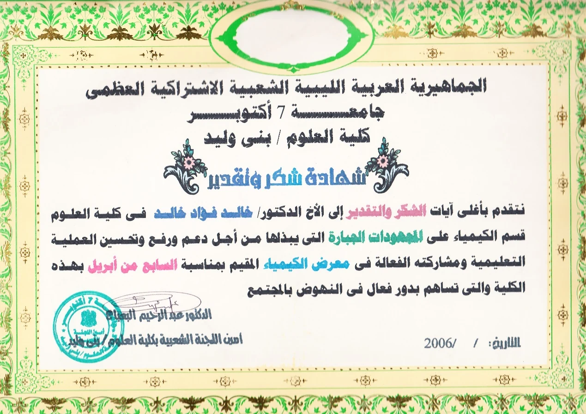
1
External Honoursتكريم الجهات الخارجية
Chemistry Exhibition Honourتكريم تنفيذ معرض الكيمياء
7 October University · Libyaجامعة 7 أكتوبر · ليبيا
Recognition for implementing a chemistry exhibition at the university.تكريم لتنفيذ معرض للكيمياء بالجامعة.
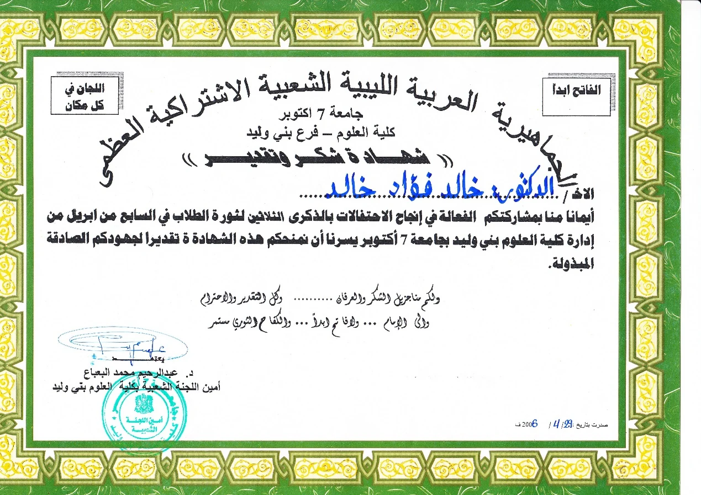
1
External Honoursتكريم الجهات الخارجية
University Development Honourتكريم الجهود المبذولة في تطوير الجامعة
7 October University · Libyaجامعة 7 أكتوبر · ليبيا
Recognition for contributions to university development.تكريم للجهود المبذولة في تطوير الجامعة.
Recognition Through Scientific Impactتقدير قائم على الأثر العلمي
A career connecting knowledge, education and practical impactمسيرة تصل المعرفة بالتعليم والأثر التطبيقي
These records reflect a career combining scientific research, university education, postgraduate capacity-building, international collaboration, industry consultation and the advancement of electrochemistry and corrosion science.تعكس هذه السجلات مسيرة تجمع بين البحث العلمي والتعليم الجامعي وبناء قدرات طلاب الدراسات العليا والتعاون الدولي والاستشارات الصناعية وتطوير تطبيقات الكيمياء الكهربية وعلوم التآكل.
Contact & Collaborationالتواصل والتعاون
Have a research, training or consultancy enquiry?هل لديك استفسار بحثي أو تدريبي أو استشاري؟
Use the dedicated contact page for verified contact details, academic profiles and the WhatsApp enquiry form.استخدم صفحة التواصل المخصصة للاطلاع على بيانات الاتصال الموثقة والملفات الأكاديمية ونموذج الاستفسار عبر واتساب.